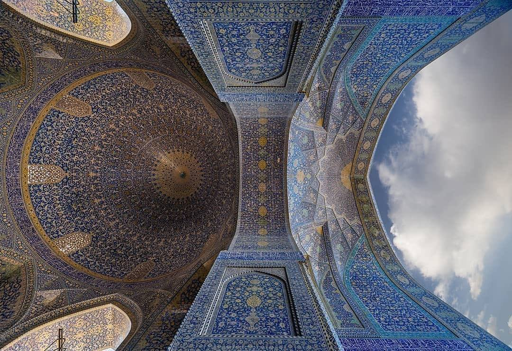

Privacy-Aware Federated nnU-Net for ECG Page Digitization
An end-to-end federated pipeline for ECG page digitization designed to reduce the need for health centers to share ECG images with a central server.

Machine learning researcher
I work on applied machine learning, medical image and signal analysis, ECG print-image digitization, maritime perception, and research software for data-driven health technology.
I am a machine learning researcher with 4+ years of combined academic and industry R&D experience. My work spans generative AI, agentic systems, deep learning, statistics, optimization, and stochastic processes.
At the University of Turku, I have worked on ECG image digitization, ECG/BCG fusion for A-Fib detection, arrhythmia classification, and maritime object detection. My current work includes a fully automated ARUNet-based pipeline for ECG print-image digitization with preprocessing, segmentation, calibrated signal reconstruction, transformer refinement, and privacy-aware federated learning.
I am also interested in medical image reconstruction for PET/CT/MRI, kinetic modeling, dynamic PET, signal and image processing, probabilistic modeling, and robust clinical AI systems.

An end-to-end federated pipeline for ECG page digitization designed to reduce the need for health centers to share ECG images with a central server.
Pipeline for ECG print-image preprocessing, segmentation, waveform reconstruction, and transformer-based refinement.
Real-time maritime object detection with multi-scale fusion and synthetic domain augmentation for small-object detection from RGB camera data.
Master's research on using convolutional neural networks across multiple time frames for financial time-series prediction.
2024 PhysioNet Challenge 2024: digitalization of ECG signals, University of Turku.
2022 Moore4Medical EU H2020, Digital Health Tech Lab, University of Turku.
2020 Development of deep neural network models for time-series analysis and stock price prediction, Shahid Beheshti University.
2017 Exponential matrix computation by the Magnus expansion, Isfahan University of Technology.
machine learning: scikit-learn, XGBoost, SciPy, statistics, optimization, exploratory data analysis, data quality management.
deep learning: TensorFlow, PyTorch, Keras, diffusion models, segmentation, CNNs, transformer refinement, federated learning.
computing: Python, SQL, R, MATLAB, Java, C/C++, SAGE, JavaScript, HTML/CSS, openMPI, CUDA, CSC Puhti/Mahti, Azure.
visualization: Matplotlib, Seaborn, clinical signal and image analysis workflows.
languages: Persian native, English advanced, French basic.
MSc Computer Science, University of Turku, Finland.
MSc Computer Science, Shahid Beheshti University. Thesis on CNNs across multiple time frames for stock-market prediction.
BSc Mathematics, Isfahan University of Technology. Work on exponential matrix computation through the Magnus expansion.
I am open to research collaboration around medical AI, ECG digitization, PET/CT/MRI reconstruction, dynamic PET, signal processing, maritime perception, and robust machine learning systems.
Reach me by email, connect on LinkedIn, or follow my work on GitHub and Google Scholar.